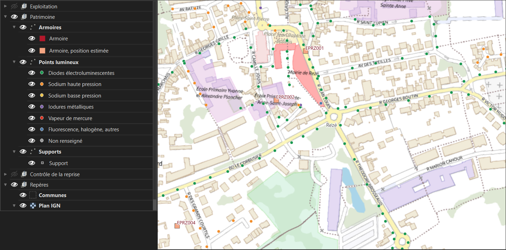
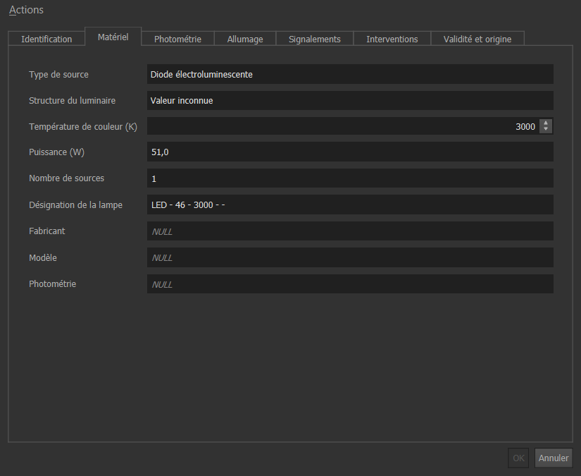
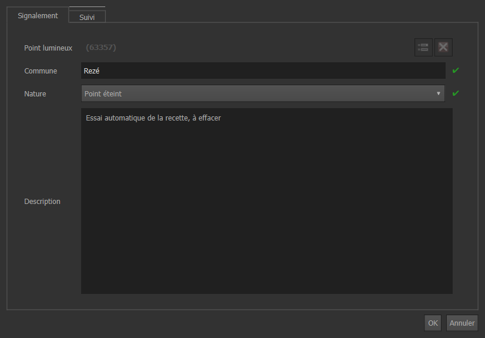

Consulter le patrimoine, signaler une panne au bureau ou sur le terrain, suivre sa réparation. Temps de lecture : 7 minutes.
Ce projet QGIS vous montre l'éclairage de votre commune et vous permet de signaler une panne. Vous ne voyez que votre commune et vous ne pouvez pas modifier le patrimoine : c'est la base de données qui l'impose, selon votre compte. Vous ne risquez donc pas de casser quelque chose.
Les exemples viennent de la commune de Rezé. Le matériel montré est celui de la donnée ouverte de Nantes Métropole. Les signalements et les interventions sont un jeu d'essai, créé pour tester les fiches : aucune source publique ne donne l'historique des pannes.
Double-cliquez sur eclairage_collectivite.qgz. QGIS s'ouvre sur votre commune. Si un identifiant vous est demandé, utilisez celui que l'administrateur vous a remis. S'il vous manque une commune, demandez-lui de l'ajouter à votre compte : le projet lui-même n'a rien à régler.

Prenez l'outil Identifier (le « i » dans la barre d'outils) et cliquez sur un point. Les onglets de la fiche séparent l'identification, le matériel, la photométrie, l'allumage, l'historique des signalements et des interventions, et l'origine de la donnée.

Comment lire une case vide. NULL veut dire que la source ne donne pas cette information. « Valeur inconnue » veut dire la même chose, pour une liste du standard où une réponse est obligatoire. Dans les deux cas, personne n'a inventé de valeur à la place.
Ctrl+K), tapez af, une espace, puis le code : af EPRZ170049. Cliquez sur le résultat : la carte s'y déplace.F6), puis le menu de filtre en bas à gauche, rubrique des filtres enregistrés. Sur les points : « Sources à vapeur de mercure », « Type de source non renseigné ». Sur les signalements : « En cours », « Ouverts depuis plus de 48 h », « Danger pour le public ».
Un danger immédiat ne passe pas par cette fiche. Câble à nu, mât sur le point de tomber : appelez d'abord le numéro d'astreinte, puis signalez avec la nature « Danger pour le public » pour garder la trace.
Choisissez la vue « Pannes et interventions ». Le triangle donne l'état du signalement. Le petit losange à l'intérieur apparaît dès qu'une intervention est prévue, et sa couleur donne l'avancement.
| Triangle | Signalement | Losange | Intervention |
|---|---|---|---|
| Rouge | Ouvert : reçu, pas encore traité | Rouge | À planifier |
| Orange | Pris en compte : une intervention existe | Orange | Planifiée, avec une date |
| Vert | Clos : l'intervention est réalisée | Bleu | En cours |
| Gris | Rejeté : sans suite, le motif est ajouté à la description | Vert | Réalisée, avec un compte rendu |
Sur le téléphone, l'application gratuite QField ouvre un projet simplifié. Il contient les points de votre commune et fonctionne sans réseau : seul le fond de plan IGN a besoin du réseau. Il ne contient aucun mot de passe et aucune connexion à la base.
Cette partie n'a pas encore été essayée sur un vrai téléphone (vérification T-MAN-06 du cahier de recette). Les libellés de QField sont donnés en anglais, comme dans sa documentation : ils peuvent changer selon la langue du téléphone.
Une seule fois : installer le projet.
.zip remis par l'administrateur.eclairage_terrain.Sur place : déclarer. Les triangles orange sont les signalements déjà en cours : inutile de les déclarer de nouveau.
La panne n'est pas encore dans la base. Elle reste sur le téléphone jusqu'à l'envoi ci-dessous. Pour un danger immédiat, appelez d'abord le numéro d'astreinte.
Au retour : envoyer. Dans Open local files, ouvrez le menu du projet, choisissez Send compressed folder to... et transmettez le .zip à l'administrateur, qui le verse dans la base. Envoyer deux fois le même projet ne crée pas de doublon. La panne apparaît ensuite sur la carte du bureau, et sa photo dans l'onglet Terrain de sa fiche. Avant d'installer un nouveau paquet, envoyez vos pannes : il remplace l'ancien.